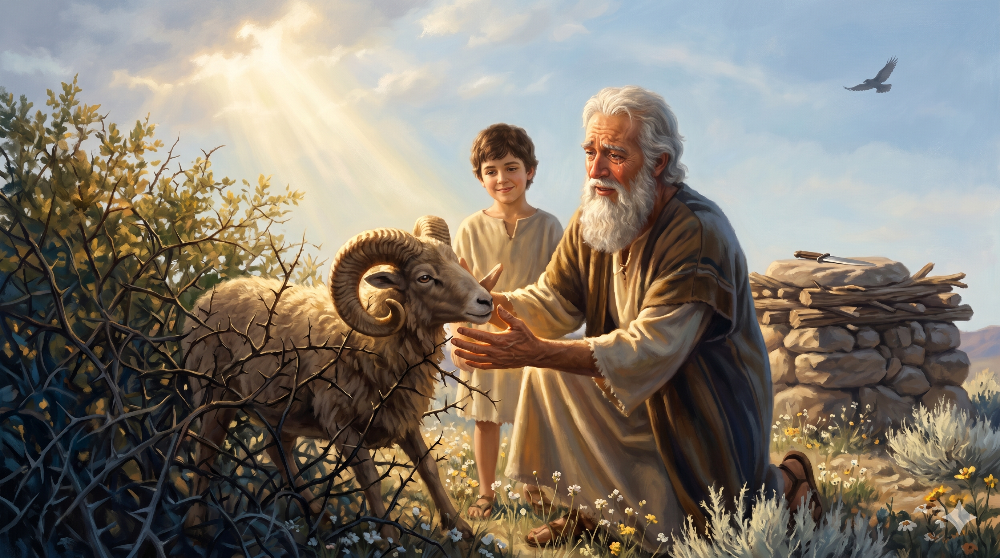

모리아 산 정상, 나무 단 위에 결박된 이삭을 내려다보는 아브라함. 그 손에 든 칼이 하늘을 향해 멈춰 서고, 빛이 그를 부른다 — "아브라함아 아브라함아 그 아이에게 네 손을 대지 말라."
여호와의 사자가 하늘에서부터 그를 불러 이르시되 아브라함아 아브라함아 하시는지라 아브라함이 이르되 내가 여기 있나이다 하매 사자가 이르시되 그 아이에게 네 손을 대지 말라 그에게 아무 일도 하지 말라 네가 네 아들 네 독자까지도 내게 아끼지 아니하였으니 내가 이제야 네가 하나님을 경외하는 줄을 아노라 … 아브라함이 그 땅 이름을 여호와 이레라 하였으므로 오늘날까지 사람들이 이르기를 여호와의 산에서 준비되리라 하더라 — 창세기 22:11–12, 14
이삭의 탄생, 하갈을 내보낸 아픔, 브엘세바 언약까지 이어진 평안한 날들 뒤에, 본문은 갑작스럽게 "이 일 후에 하나님이 아브라함을 시험하시려고" 라는 무거운 한 문장으로 시작됩니다. 하나님은 아브라함을 부르시고 이렇게 말씀하십니다 — "네 아들 네 사랑하는 독자 이삭을 데리고 모리아 땅으로 가서 내가 네게 일러 준 한 산 거기서 그를 번제로 드리라." 이 한 절 안에 "아들", "사랑하는", "독자", "이삭" 이라는 네 단어가 차곡차곡 쌓여 있습니다. 하나님은 아브라함에게 가장 아픈 지점을 정확히 짚으셨습니다. 그런데 성경은 그의 고뇌의 밤을 한 줄도 기록하지 않습니다. 단지 "아브라함이 아침에 일찍이 일어나 … 번제에 쓸 나무를 쪼개어 가지고 떠나" 라고만 적습니다. 가장 깊은 믿음은 긴 말이 아니라 조용한 순종의 발걸음으로 나타납니다.
사흘 길을 걸어 멀리서 그 산을 바라본 아브라함은 종들에게 이렇게 말합니다 — "내가 아이와 함께 저기 가서 예배하고 우리가 너희에게로 돌아오리라." 그는 "내가" 돌아오리라고 하지 않고 "우리가" 돌아오리라 말합니다. 히브리서 11장은 그 마음을 이렇게 해석합니다 — 아브라함은 하나님이 이삭을 죽은 자 가운데서라도 다시 살리실 수 있다고 믿었습니다. 이삭이 "번제할 어린 양은 어디 있나이까?" 묻자 아브라함은 떨리는 목소리로 대답합니다 — "내 아들아 번제할 어린 양은 하나님이 자기를 위하여 친히 준비하시리라." 그 순간 그는 답을 알고 있지 못했습니다. 단지 그가 아는 한 가지는, 여태까지 신실하셨던 하나님이 이번에도 신실하시리라는 것뿐이었습니다. 그리고 마침내 칼이 내려오려는 순간, 하늘의 음성이 두 번 그를 부릅니다 — "아브라함아 아브라함아." 수풀에 걸린 한 마리 숫양이 준비되어 있었습니다. 그가 그 땅 이름을 "여호와 이레", 곧 "여호와의 산에서 준비되리라" 고 부른 까닭이 여기에 있습니다.

칼이 멈추고, 뒤의 수풀 속에서 뿔이 걸려 발견된 한 마리 숫양 — 아들 대신 드려진 준비된 제물, 그리고 하늘의 빛이 아버지와 아들 모두를 감싼다.
하나님은 때로 우리가 가장 사랑하는 것을 드려 보라 하십니다. 그것은 하나님이 그 사람을 미워하셔서가 아니라, 그 사랑의 자리에 하나님이 1순위로 앉아 계시는지 확인하기 위함입니다. 당신의 이삭은 무엇입니까 — 자녀입니까, 노후의 계획입니까, 오래 간직한 꿈입니까. 하나님은 그것을 빼앗으시려는 분이 아니라, 그것을 "자기 자리에" 두려 하시는 분이십니다. 이삭이 제단에서 내려왔을 때 아브라함에게 돌아온 이삭은 이미 "받아 두었다가 돌려받은 아들"이었습니다. 한 번 내려놓은 것만이, 진정으로 나의 것이 됩니다.
여호와 이레" — 여호와의 산에서 준비되리라. 이 이름은 "하나님이 무엇을 안 시키실까"의 신앙이 아니라 "하나님이 반드시 준비해 두셨을 것"이라는 신앙입니다. 오늘 당신이 마주한 그 산이 보일 때, 답이 수풀 뒤에 있을지도 모른다는 사실을 기억하십시오. 아브라함이 칼을 든 그 순간까지 숫양은 준비되어 있었지만 "보이지 않았습니다." 하나님의 준비하심은 대개 마지막 순간에 드러납니다. 그래서 오늘의 걸음은 이미 보이는 해결을 따라 걷는 걸음이 아니라, 신실하신 하나님을 믿고 한 걸음 먼저 내딛는 순종의 걸음입니다. 그 산에서 — 바로 그 산에서 — 준비가 드러날 것입니다.
가장 사랑하는 것을 드릴 때 하나님은 "이제야 네가 나를 경외하는 줄 안다" 하십니다.
믿음의 최고봉은 설교가 아니라 칼을 든 손입니다.
오늘, 당신의 이삭을 제단 위에 올리십시오 — 여호와 이레, 그 산에서 준비되리라.